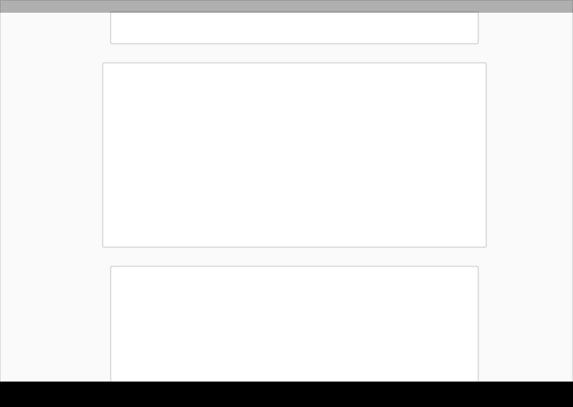
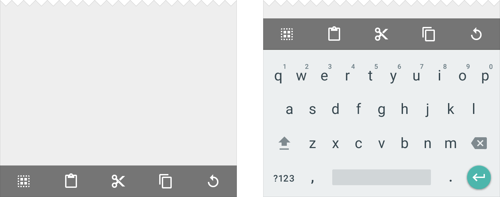
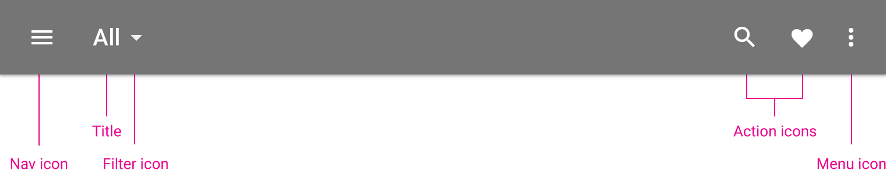

This structure includes a permanent app bar and floating action button. An optional bottom bar can be added for additional functionality or action overflow. Side nav menus overlay all other structural elements.
Tablet structure
This structure shows a permanent app bar with a floating action button. The app bar absorbs elements from the tablet and mobile bottom bars. An optional bottom bar can be added for additional functionality or action overflow. A side nav overlays all other structural elements. A right nav menu can be accessed temporarily or pinned for permanent display.
Desktop structure
This structure contains a permanent app bar with a floating action button. The app bar absorbs elements from the tablet and mobile bottom bars. Where possible, the window controls are absorbed into the app bar. Side navigation menus can be accessed temporarily or pinned for permanent display. Side nav menus as well as the content canvas can have their own secondary toolbars for tabs, palettes, or secondary actions.
UI regions
Define a primary horizontal or vertical divider.
Avoid slicing up the interface into too many regions which can cause L shapes. Instead, use whitespace to delineate secondary areas.
Break edges with cards and floating action buttons.
Use cards to organize content when specific behaviors are needed or if groupings of information need more separation than what whitespace or dividers can provide.

工具栏 Toolbars
Toolbars are versatile and can be used in many different ways. Here are some examples.
Full-width, default height app bar
Full-width, extended height app bar
Column-width toolbars at multiple levels of hierarchy
Flexible toolbar and card toolbar
Floating toolbar
Detached toolbar palette

Bottom toolbar that launches to a shelf and clings to top of keyboard or other bottom component
Bottom toolbar shelf
应用栏 App bar
The app bar, formerly known as the action bar in Android, is a special kind of toolbar that’s used for branding, navigation, search, and actions.
If your app has a side nav, the control to open/close the side nav is on the left side of the app bar. The control can also morph into an up arrow for page navigation. The title in the app bar reflects the current page and can be an app title, page title or a page filter.
Icons on the right side of the app bar are app-related actions. The menu icon opens the overflow menu, which contains secondary actions and menu items like help, settings, and feedback.

Light
Dark
Colored
Transparent
Metrics
Default height:
Mobile Landscape: 48dp
Mobile Portrait: 56dp
Tablet/Desktop: 64dp
For extended app bars, the height is equal to the default height plus content increment(s).
Menus
A menu is a temporary sheet of paper that always overlaps the App Bar, rather than behaving as an extension of the App Bar.
系统栏 System bars
Status bar/window bar
On Android, the status bar contains notification icons and system icons. On Chrome, the top bar contains the window controls: minimize, full screen, and close. In a Chrome app, the top bar can disappear, and the window controls are then brought into the app bar.
Android status bar
Chrome window bar
Metrics:
Android status bar height: 24dp
Chrome window height: 32dp
Android status bar on top of the app bar
Chrome window bar on top of the app bar
Chrome window controls inside app bar
Color variants
By default, the color of the status or window bar is a darker tone of the app bar color. It can also reference an element in the layout or it can be translucent.
Color is based on a sample taken from the content.
Translucent status bar, 20% Black #000000
Dark status bar
Status bar color in a darker tone of the app bar color
Android navigation bar
The system bar in Android houses the device navigation controls: Back, Home, and Recents. It also displays a menu for apps written for Android 2.3 or earlier.
Metrics:
Height: 48dp
Dark
Light
Color variants
By default, the color of the status or window bar is a darker tone of the app bar color. It can also reference an element in the layout or it can be translucent.
Translucent
Translucent over complex image
Translucent
Transparent over even-toned image
Color is based on a sample taken from the content.
Don’t use a transparent bar over a complex image.
Reference color of device
Compliment device color
Chrome OS shelf
The shelf houses the app launcher, application icons, and system settings on Chrome OS.
Metrics:
Height: 56dp
导航抽屉 Side nav
If present, the left and right nav bars can be pinned for permanent display or they can float temporarily as overlays.
The content in the left nav is ideally navigation- or identity-based. The content in the right nav should be secondary to the main content on a page.